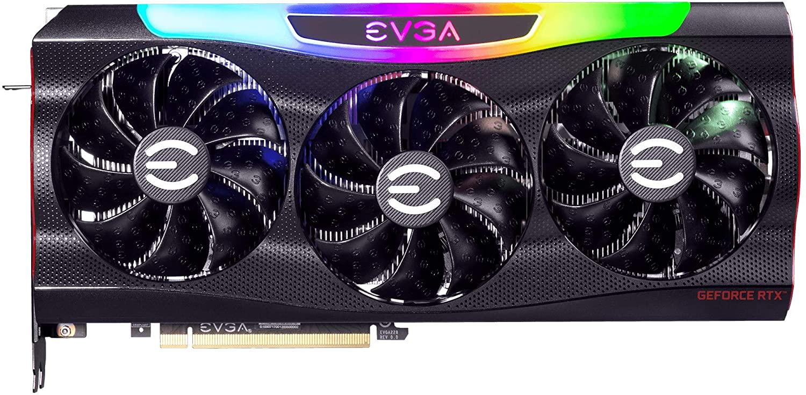
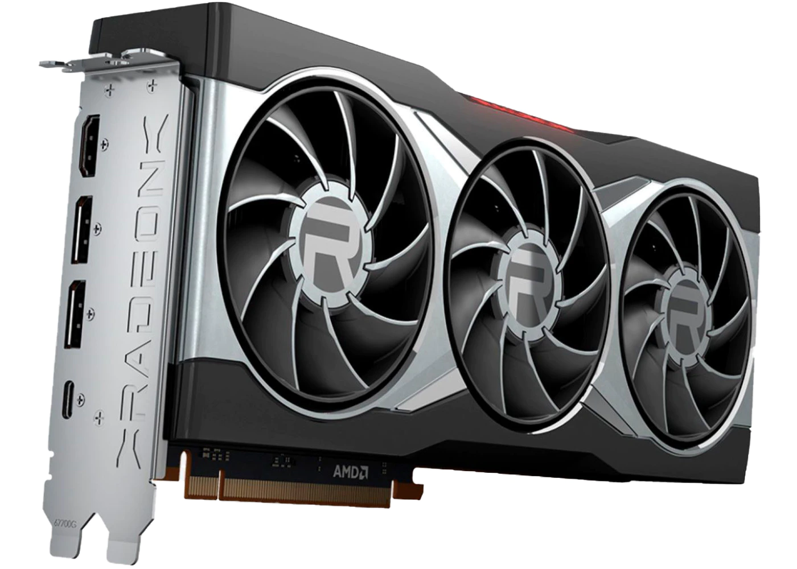

The GPU, or graphics card, gives you a display output. They come in two main forms, integrated, and discreet. Integrated graphics are less powerful, and are built into the CPU. They can be used for smaller, less intensive tasks, though they have stepped up in performance recently. Discreet graphics cards are typically more powerful, being separate from the motherboard. These cards have more space for superior cooling and extra performance. A feature on some older GPUs is Nvidia SLI/AMD Crossfire. This feature allows for multiple GPUs to be linked in the system, allowing for extra performance. On newer GPUs, however, this is no longer a feature due to increased performance.
